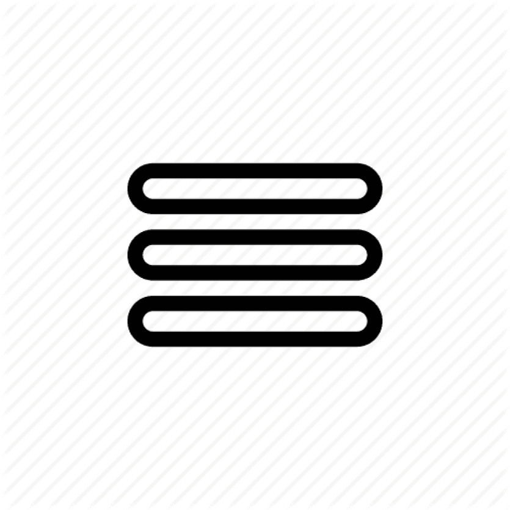

Я родился в городе Ульяновск, с раннего возраста увлекался компьтерными технологиями, закончил 11 класс в лицее при УЛГТУ.
Первый язык програмирования начал изучать в 8 классе, это был Pascal ABC. Сейчас владею такими языками, как C++, Python, Java, Javascript.
В будущем надеюсь найти работу, которая будет мне нравится и с большой зарплатой.